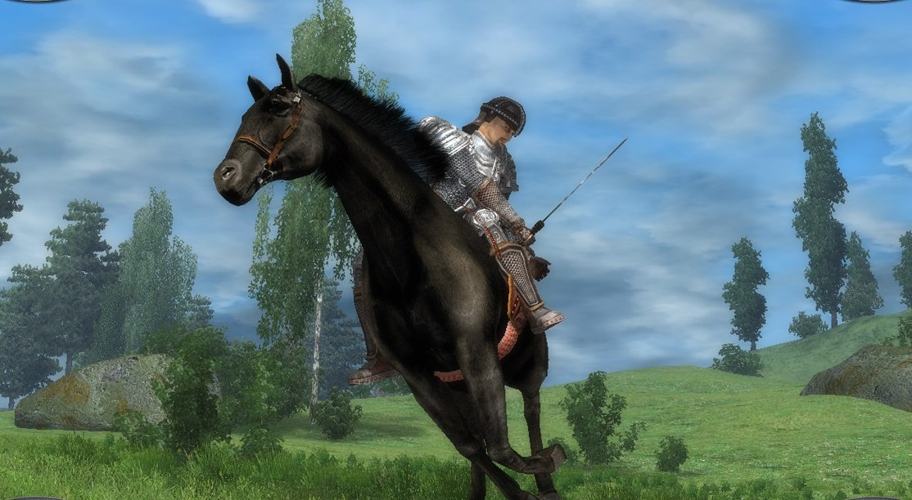
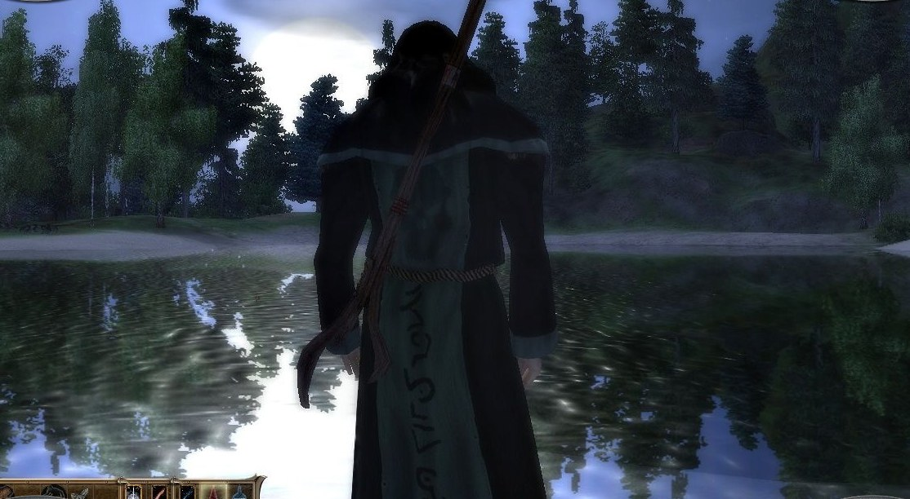
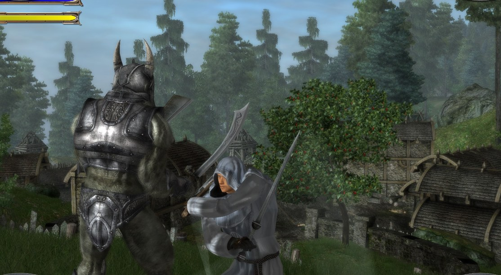
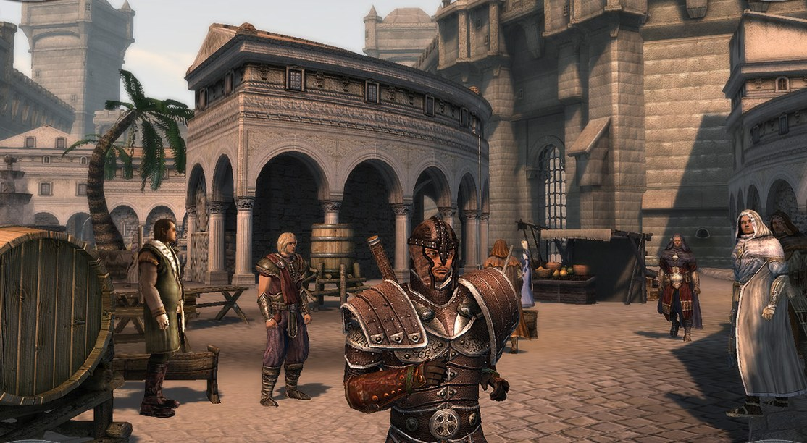
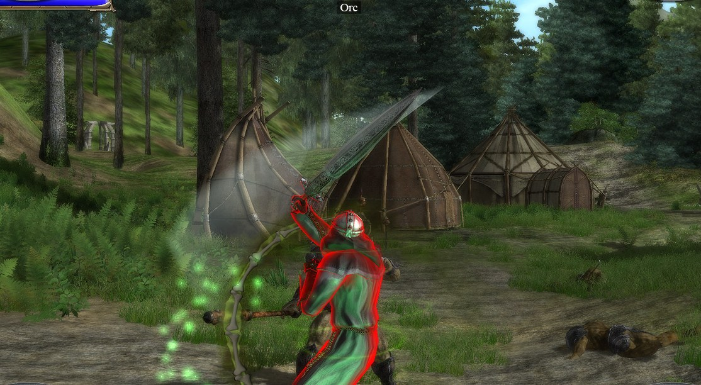
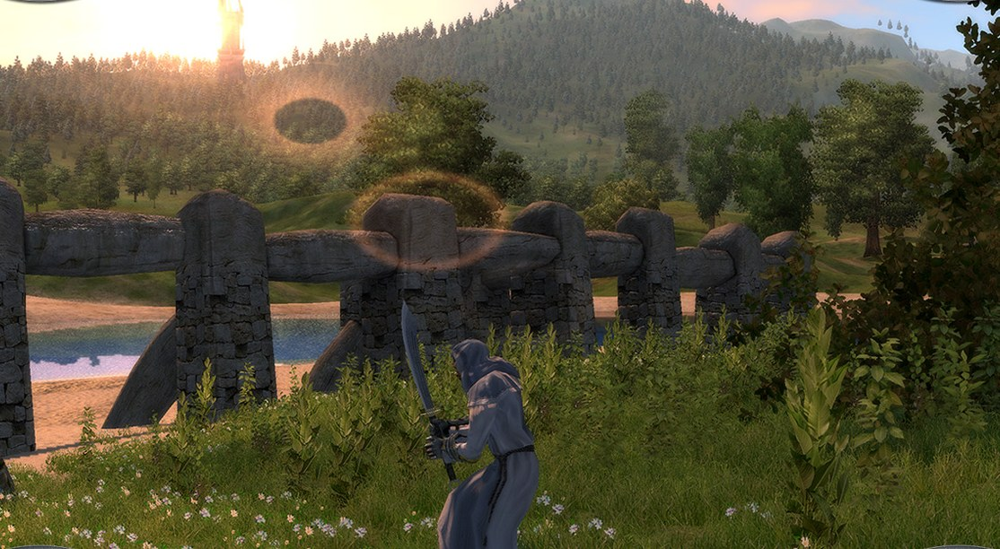
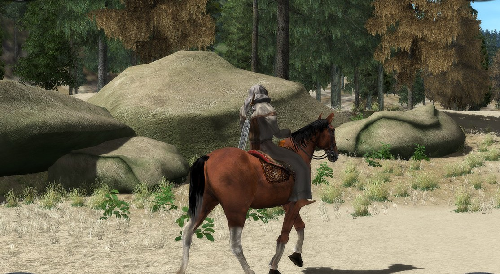
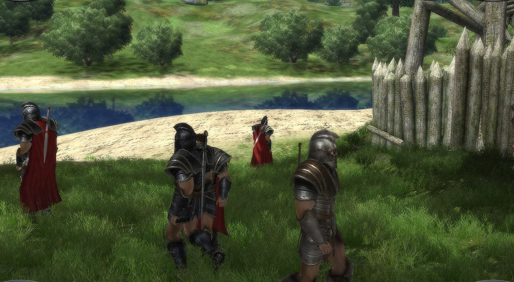

The legend, in motion
Remember why you never really left
The original 2007 trailer. Questionable voice-over, magnificent orchestral bombast, and a world that still calls your name. Press play — nostalgia is free.
Official trailer © TopWare Interactive — shown here as part of a non-commercial fan project.
The server
The community server is live
This isn't a promise or a beta sign-up. When the official Two Worlds lobby servers went dark, online play died with them — Tw1mp brings it back, and it's running right now on a public host. The unmodified 1.7 client connects, registers, chats and hosts games on its own, exactly as the original protocol did.
Original lobby protocol
The complete login sequence on port 17171 — handshake, registration, login, serial binding, MOTD. No patches, no mods.
All four multiplayer towns
Lobby channels for every multiplayer map, with configurable channel count and player limits — up to 50 players per channel.
Live lobby presence
Players see each other's heroes walking around the town map, just like on the official servers. Chat, trade channels, /whois.
Hosting & matchmaking
Create, advertise, join and start games from the lobby. Actual gameplay runs peer-to-peer over the community DirectPlay replacement, as originally designed.
Server-side characters
Your hero is stored on the server and follows your account. Rescue your character from a live server and import it locally.
Secure & verified
SQLite accounts with salted PBKDF2 hashes, thread-safe lobby state, 35 protocol-level tests — verified against the real 1.7 client.
Where it stands — straight talk
The lobby is live and reachable over the internet, and solo hosting is verified inside the running game. The next milestone is the first live two-player session over the network — grab a friend, run the installer, and you're literally that test. Until the built-in NAT resolver lands, internet co-op runs over a VPN (ZeroTier / Tailscale) or a port-forward on the host. Same LAN just works.
"After eighteen years, I heard the town bell of Net_T_01 again. I may have wept into my ale."— A returning knight, allegedly
"Set it up between two meadow patrols. Even I understood the registry step."— Village guard, level 4
"Zero dependencies? In THIS economy?"— Traveling merchant, impressed
How to join
Five steps back to Antaloor
The server is already online — you just point your game at it and log in. The whole setup is about two minutes.
-
Install the game
Two Worlds 1, version 1.7 — e.g. the Steam Epic Edition. No patches or mods required.
-
Run the one-click setup
Recommended — one file, one double-click. The setup tool backs up your current server list, adds the TW1MP server, and registers the community DirectPlay replacement so online play works. Everything is per-user: no admin rights, no UAC prompt.
Double-click the downloaded file and follow the prompts. To undo everything later, run it again with the
TW1MP_REMOVE=1environment variable set.Prefer to do it by hand? Open
regeditat the per-user key below and prepend the server toEarthNet_ServersAddresses— it then shows up by name in the in-game server list. Manual hosts also need the legacy DirectPlay component (see below).HKEY_CURRENT_USER\SOFTWARE\Reality Pump\TwoWorlds\Network EarthNet_ServersAddresses = "TW1MP Community Server""87.106.168.34"
-
DirectPlay — only if you set up manually
The one-click setup already handles networking via the community replacement, so you can skip this. If you installed by hand and want to host sessions, enable Windows' legacy DirectPlay once and reboot:
Enable-WindowsOptionalFeature -Online -FeatureName DirectPlay -All
-
Log in
Pick the server in the game's server selection and register or log in — unknown accounts can be created automatically on first login.
-
Play together
The lobby handles matchmaking and chat; the game session itself runs peer-to-peer. On the same LAN it just works — over the internet, use a VPN like ZeroTier or Tailscale, or a port-forward on the host's side, until the built-in NAT resolver arrives.
Want to run your own server? git clone the repo and start TW1MP-Server.py — Python 3.10+, nothing else. A Windows desktop UI with live log, player list and character import is included.
Guides & Downloads
Get the most out of Antaloor
The admin bot in the lobby points players here — everything spelled out, ready to copy.
More draw distance & detail
The complete graphics tuning file, ready to copy — wider horizon, higher LOD, denser grass.
Read the guide → ConsoleConsole commands & cheats
Open the console with ^, enable TwoWorldsCheats 1. The handiest commands in one table.
Server, tools & mods
Setup tool, text input fix, the quest creator and the complete modder's toolkit.
All downloads →The Modder's Arsenal
Ten artifacts. Zero gold pieces.
Forged by MedievalDev so you don't have to hex-edit like it's 2007. Every artifact below is free, open source, and battle-tested on real installs. Equip at will — no level requirement.
Two Worlds Modding HUB
+100 Convenience · Set bonus: bundles every artifact below
"One hub to rule them all. Auto-detects your tools, ships bilingual guides, and knows more file formats than the game itself."
Claim artifact → Legendary · Newly forgedTW1 Dialog & Quest Creator
+100 Storytelling · Unlocks: writing actual quests
"For eighteen years the answer was 'you can't make quests for Two Worlds.' Then someone read the bytes. Branching dialogue, journal entries, rewards — packed into a .wd file that never touches your install. Full write-up here."
Claim artifact → EpicVDF Import/Export Tool
+40 Model Freedom · Blender plugin included
"Turns proprietary VDF into honest OBJ and back — shaders survive the round trip."
Claim artifact → EpicLND Map Viewer & Editor
+40 Cartography · Exports full world maps to PNG
"See all of Antaloor at once. Stitch the tiles, extract every placed object to CSV, feel like a god."
Claim artifact → EpicPAR Editor
+40 Game Balance · 1,800+ labeled fields
"Every NPC, sword and spell in one GUI. Byte-perfect saves, JSON export. Spreadsheet warriors, rejoice."
Claim artifact → RareTW Mod Installer
+25 Laziness (the good kind)
"One click. Finds your install — Steam, GOG, CD or SDK — and activates mods so you don't have to."
Claim artifact → RareModel Injection Guide & Tools
+25 Craftsmanship · Full pipeline
"From Blender export to in-game glory — every step documented, no sacrifices required."
Claim artifact → RareEditor Command Injector
+25 Automation · Clipboard sorcery
"Whispers batched commands into the ancient editor. Includes a searchable command grimoire."
Claim artifact → RareDialog Viewer & Editor
+25 Eloquence
"Reads the game's dialog files so you can finally put better words in NPCs' mouths."
Claim artifact → UncommonModding Guide
+10 Wisdom · Starter gear
"Where every hero starts. Written guides, zero gatekeeping, no 'git gud' required."
Claim artifact →Screenshots
Antaloor, then and forever
















Official screenshots, courtesy of the Steam store page.
From the same forge
The smiths reviving Two Worlds are forging a world of their own
Meet Alchimist — Secret of the Worlds: a handcrafted open-world RPG where alchemy isn't a menu, it's a workbench. Real cauldrons, real mistakes, real explosions. A 5×6 km world, hundreds of ingredients, and more herbs than a grandmother's pantry.
If Tw1mp gave you your childhood back, this is where we're spending ours. Come take a look — the door of the smithy is always open.